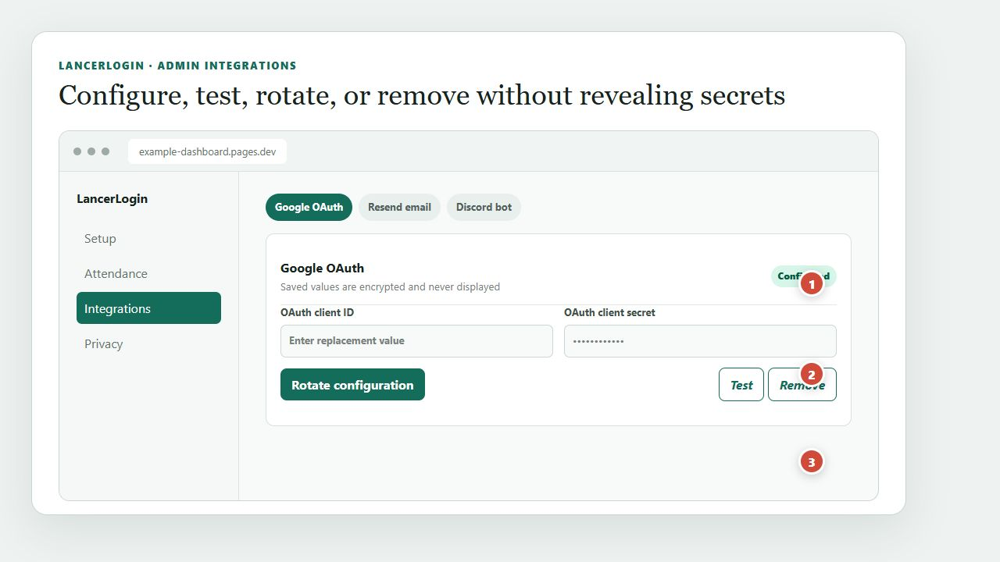

Resend
Send one idempotent missed-meeting email or an individual attendance report to the email stored in the roster.
Task 3
Operators manage meetings, attendance, corrections, excuses, reports, and kiosk status. Admins can also manage users, security, integrations, branding, and destructive configuration.
Send one idempotent missed-meeting email or an individual attendance report to the email stored in the roster.
Link or unlink Discord IDs, ping only linked missing members, review contests for the selected meeting, and resolve them with an audit trail.
Upsert meeting calendar events. Authenticated heartbeats maintain one persistent kiosk-status message, and a five-minute reconciliation marks stale kiosks offline without blocking attendance.

Configured status is visible, while saved credential values remain hidden.
Each integration has a safe status test and an explicit removal action.
Replacement values overwrite the encrypted configuration without exposing the previous one.
Use the repository’s backup-d1 helper from your adopter-owned checkout. It verifies a scoped account-owned token against the selected CLOUDFLARE_ACCOUNT_ID and refuses to overwrite an existing export. Attendance CSV protects leading spreadsheet formula markers as text. Restore D1 only to the same installation with the exact confirmation phrase, verify row counts, and re-pair the kiosk only when pairing state is inconsistent. See docs/BACKUP-RESTORE.md for commands and checks.